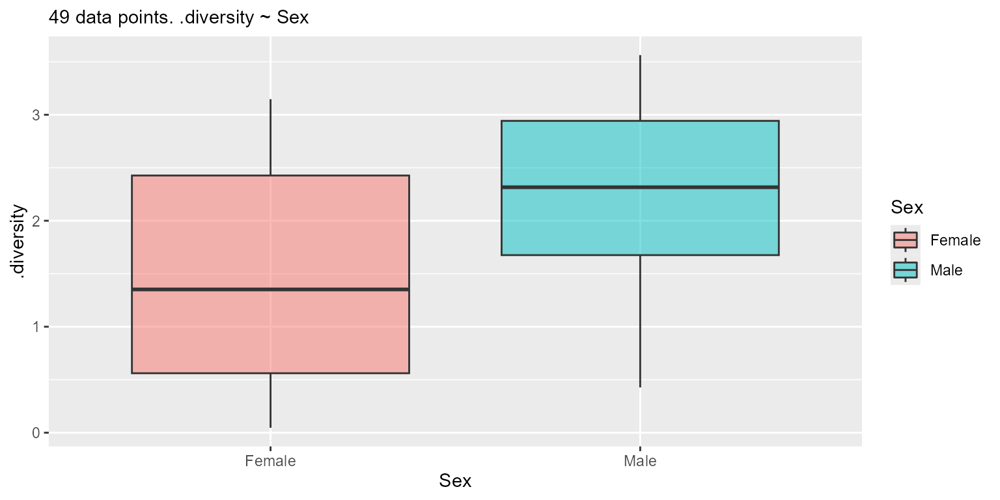

Facilitates running Kruskal-Wallis (stats::kruskal.test()) and Wilcoxon
(stats::wilcox.test()) rank sum tests. Primarily for internal use, but
exported for power-users who want to interactively explore rank sum
statistics of large datasets.
Usage
stats_rsum(df, resp = attr(df, "response"), stat.by = NULL, split.by = NULL)Arguments
- df
A data.frame with any columns named by
resp,stat.by, andsplit.by.Required.- resp
The response (dependent; y-axis) variable in
df, such as taxa abundance or alpha diversity. Must be numeric. Default:attr(df, 'response')- stat.by
The variable in
dfdefining the statistical groups. Must be categorical. Required.- split.by
The variable(s) in
dffor splitting the data by prior to any calculations. Must all be categorical. Default:NULL
Object Methods
See the Data
$plot(), $print(), and $data(all = TRUE)
all- IfFALSE, only return columns used by the rank sum test.
One-sample Wilcoxon
Apply the one-sample Wilcoxon rank sum test. The
default alternative hypothesis, alt = "gt", mu = 0 tests for means that
are greater than zero.
$means(alt = "gt", mu = 0, level = 0.95, p.adj = 'fdr')
alt- One of'ne','lt', or'gt', corresponding to the'two.sided','less', and'greater'arguments forstats::wilcox.test(), respectively.mu- The reference mean being tested against.level- Confidence level.p.adj- Multiple comparison correction to use. Seestats::p.adjust().
Returns a stats table - see below.
Pairwise Wilcoxon
Pairwise differences, comparing the means of all stat.by groups to one
another. Uses the two-sample Wilcoxon rank sum test,
also known as the Mann-Whitney test. The default alternative hypothesis,
alt = "ne", mu = 0 tests for means that are not equal to each other.
$pmeans(alt = "ne", mu = 0, level = 0.95, p.adj = 'fdr')
mu- Whenaltis'lt'or'gt', the amount by which means need to differ.alt,level,p.adj- see above.
Returns a stats table - see below.
Groupwise Differences
Runs the Kruskal-Wallis rank sum test on each
split.by group to determine if means differ by stat.by.
$gmeans(p.adj = 'fdr')
p.adj- see above.
Returns a stats table - see below.
Stats Tables
The *means() functions above return a tibble data.frame with columns
including:
Columns named by
split.byandstat.by.h1- Alternate hypothesis..n- Number of samples..se- Standard error..df- Degrees of freedom..stat- Test statistic..t.ratio-.mean/.se.mean- Average value among the samples..estimate- Difference in means..lower,.upper- Confidence interval..p.val- Probability that null hypothesis is correct..adj.p-.p.valafter adjusting for multiple comparisons.
Additionally, running $code on the table object will output the underlying
code used to generate the statistics.
See also
Other stats_tables:
adiv_stats(),
bdiv_stats(),
distmat_stats(),
stats_regr(),
stats_table(),
taxa_stats()
Examples
library(rbiom)
biom <- rarefy(hmp50)
df <- adiv_table(biom, adiv = "Shannon")
rs <- stats_rsum(df, resp = ".diversity", stat.by = "Sex")
rs$plot()

rs$means()
#> # Test: wilcox.test(.diversity ~ 1)
#> # A tibble: 2 × 9
#> Sex .h1 .n .stat .mean .lower .upper .p.val .adj.p
#> <fct> <fct> <int> <dbl> <dbl> <dbl> <dbl> <dbl> <dbl>
#> 1 Female > 0 30 465 1.45 1.14 Inf 0.000000913 0.00000183
#> 2 Male > 0 19 190 2.28 1.88 Inf 0.0000715 0.0000715
rs$pmeans()
#> # Test: wilcox.test(.diversity ~ Sex)
#> # A tibble: 1 × 8
#> .h1 .n .stat .estimate .lower .upper .p.val .adj.p
#> <chr> <int> <dbl> <dbl> <dbl> <dbl> <dbl> <dbl>
#> 1 Female != Male 49 167 -0.781 -1.45 -0.178 0.0159 0.0159
rs$gmeans()
#> # Test: kruskal.test(.diversity ~ Sex)
#> # A tibble: 1 × 5
#> .n .stat .df .p.val .adj.p
#> <int> <dbl> <int> <dbl> <dbl>
#> 1 49 5.86 1 0.0155 0.0155
rs$gmeans()$code
#> stats <- plyr::ddply(
#> .data = data,
#> .variables = .(),
#> .fun = function (d) {
#>
#> stats::kruskal.test(
#> formula = .diversity ~ Sex,
#> data = d ) %>%
#> with(data.frame(
#> row.names = NULL,
#> .n = nrow(d),
#> .stat = statistic,
#> .df = parameter,
#> .p.val = p.value )) %>%
#> suppressWarnings() %>%
#> tryCatch(error = function (e) data.frame()[1,])
#>
#> }) %>%
#> as_tibble() %>%
#> select(-any_of('.id')) %>%
#> mutate(.adj.p = p.adjust(.p.val, 'fdr')) %>%
#> mutate(across(where(is.double), ~ signif(.x, digits = 3)))